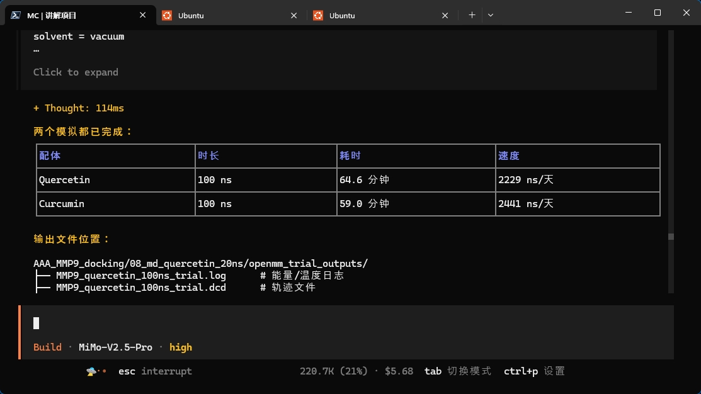

晚上熬夜熬得很晚。
这几天明明已经快到期末周了，可我总感觉自己一直被各种事情推着走。论文、模拟、环境配置、代码、英语、健身、生活节奏，全都挤在一起。有时候一天结束，回头一看，好像忙了很多事，却也说不清自己到底完成了多少。
但今晚确实有一个很明显的节点：我的分子动力学模拟效率突然上去了。
非常感谢我的朋友唐磊，帮我一起搭建环境，也帮我理解和使用 MIMO Code。以前很多步骤我可能要一边查资料、一边试错、一边报错、一边怀疑自己。现在借助 AI 编程工具和更顺畅的环境，很多操作都变得清晰了很多。
某种程度上，它像是把我原本很笨重的工作流，突然往前推了一大截。以前我可能需要花很久才能跑通、整理、排查的内容，现在可以更快地完成，也更容易把注意力放回真正重要的地方：为什么要做这个模拟、结果是否稳定、哪些指标值得进一步分析、这项工作能不能和临床问题产生联系。
今晚两个模拟都完成了。
Quercetin 和 Curcumin 的 100 ns 试运行都顺利结束。看到日志、轨迹文件和最终结构都生成出来的时候，我其实有一点说不出的踏实感。它可能还不是一个完美的生产级结果，也不意味着文章就能顺利完成，但至少说明我又往前走了一步。
这几天也让我更强烈地感觉到：人还是要与时俱进。
不是说所有新工具都一定有价值，也不是说有了 AI 就可以跳过基础。但如果一个工具能帮我减少重复劳动、降低试错成本、提高学习速度，那我就应该去学习它、使用它，而不是因为陌生就排斥它。
医学科研本来就是一条很长的路。以前可能只靠手工查文献、手动整理数据、慢慢调代码；现在则可以在保持判断力的前提下，借助更多工具加速自己。真正重要的不是工具替我思考，而是工具让我有更多精力去思考。
当然，我也知道自己这几天有点失衡。
因为忙，总是忘记健身；因为压力大，也总是放纵自己。明明想让生活更规律，却又经常在熬夜和焦虑里把节奏打乱。期末周马上来了，我不能一直这样被事情拖着走。
所以今晚之后，我想慢慢把状态调整回来。
再跑几个蛋白，把该整理的结果先推进一点。然后就去背英语单词，去补该补的课，去恢复训练，去把生活重新拉回正轨。
这篇记录不是什么大事。
只是一个普通的深夜，一个朋友的帮助，一个工具带来的效率跃迁，以及一个医学生在忙乱里提醒自己：别停下，也别乱掉。